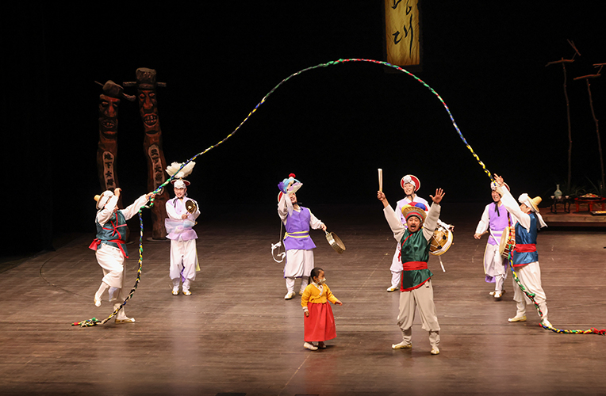
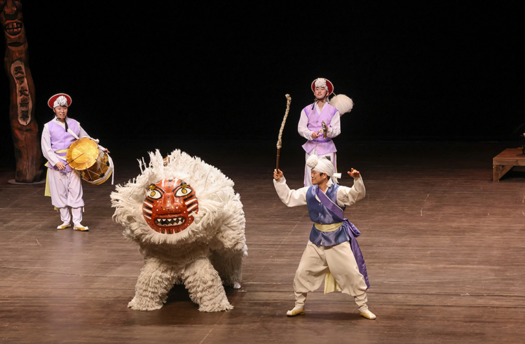
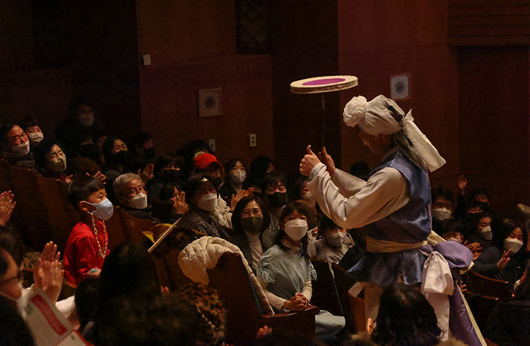

설공연 <흑토끼 연희 판판판>
- 일시
- 1.21.(토)~1.22.(일) 15:00
- 장소
- 연악당
- 관람료
- 전석 10,000원
- 출연진/연출진
- 연희집단 The 광대
- 관람연령
- 48개월이상
유쾌한 '연희집단 The 광대'의 맛깔스러운 재담과 연희!
고향을 찾은 가족, 또는 고향에 가지 못한 이웃과 서로의 마음을 나누며 다 같이 즐길 수 있는 신명나는 연희공연. 유쾌하고 즐거운 에너지와 함께 시작부터 끝까지 눈을 뗄 수 없는 전통연희 갈라 퍼포먼스로 특별한 연휴를 선물한다.
세부프로그램
1. 판굿(선반 사물놀이) 2. 땅줄놀이 3. 상쇠놀이, 설장구놀이 4. 사자놀음 5. 소고놀이 6. 버나놀이 7. 죽방울놀이 8. 열두발 상모놀이
* 공연내용과 일정은 사정에 따라 변경 될 수 있습니다.


